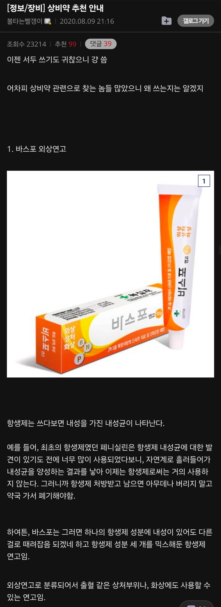
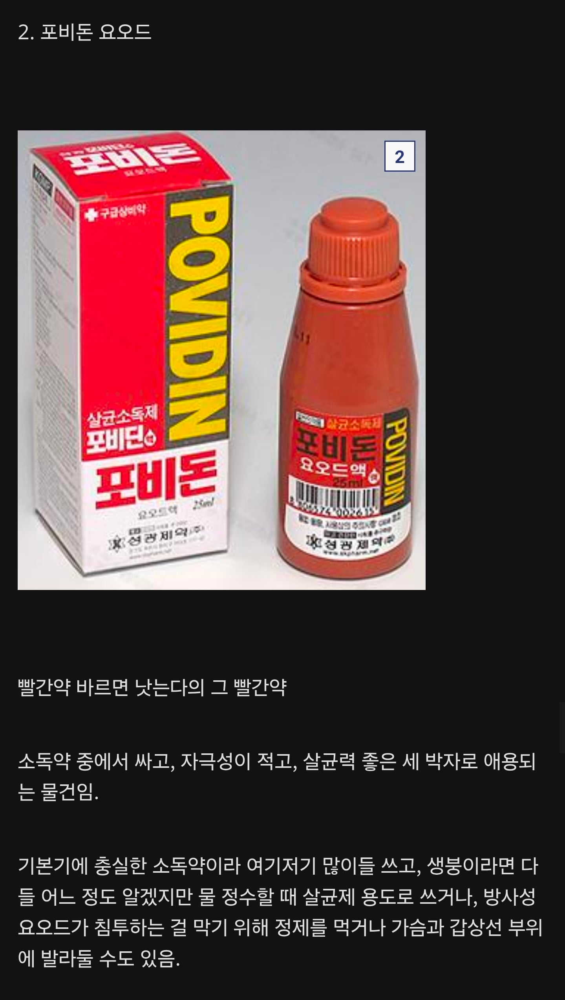
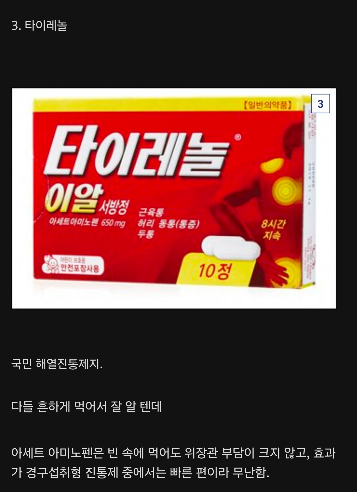
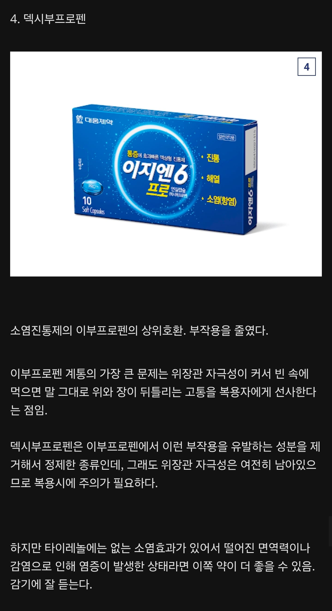
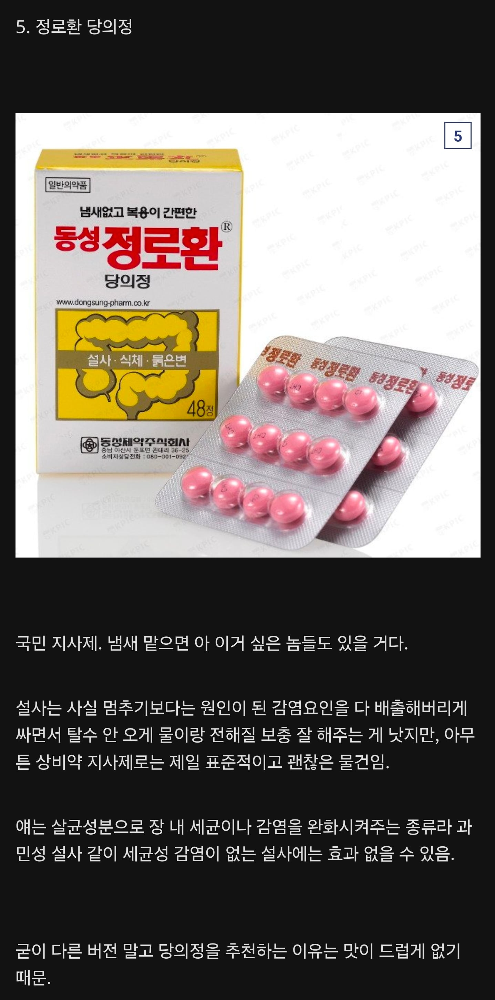
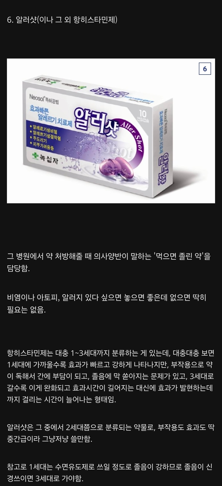
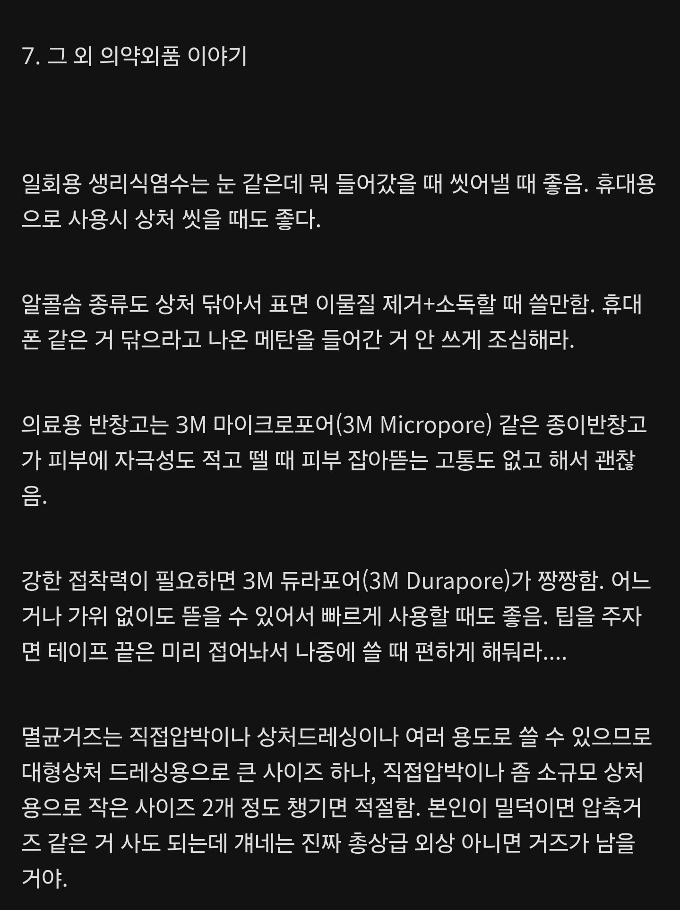

와 정로환냄새
대체 어떤 환경에 처해있길래...
상비약 ㅇㄷ
바스포 말고 쿼드케어 사셈
성분같은데 함량이 더 많고 통증완화도 해줌
ㅇㄷ
상비약으로 호랑이 연고 같은건 안쳐주냐 ㅋㅋ
그건 타르코프에서나 써라
안티푸라민
상비약 와드
.와드
상비약
와드
###
잘못된 정보가 있어서 참고하라고 적음
포비돈 같은 요오드 소독약을 갑상선이나 가슴팍에 바른다고 해도 아무런 방사선 방호 능력이 없음.
오히려 피부에 자극을 일으키고 과다흡수로 독성을 일으키는 등 건강에 악영향을 끼칠 가능성이 훨씬 높다.
방사성 위기 상황에 투여하는 건 안전한 수준으로 정확하게 계량되어 제조된 요오드화칼륨(KI) 정제 알약임.
여러 방사성 핵종 중에서 체내(주로 갑상선)에 잘 축척되고 위험한 아이오딘-131이 저장될 공간을 줄여서 자연스럽게 배출되도록 하는 약이고, 이것만으로 모든 위험을 배제할 수 있는 것도 아님.
포비돈을 희석해서 먹는다고 한들 부차적인 비식용 성분들도 포함되어 있고 위장관 손상을 일으킬 수도 있음.
제대로 계량도 못 하는 상황에서 포비돈을 식수 소독용으로 사용하는 것은 아이오딘 과다 흡수 가능성이 있으므로 정말 최후의 방법이어야만 함.
ㅋㅋㅋㅋㅋ군의관한테 머리아프다고하면 포비돈 이마에 동그라미 그려넣는줄 아나봄
군대에서는 무릎이 뻐근할때 wd를 뿌리면 낫습니다…
구리스는 안 발라도 되나요
+++
덧붙여서 복합성분 항생제 연고 같은 경우는
내성균을 걱정해서 여러 성분을 넣은 것이 아님.
단지 항생제의 종류에 따라 효과적으로 항균이 가능한 병원균의 범위와 유형이 다르기 때문임.
(그람 음성균, 그람 양성균 등)
어떤 환경에서 상처가 났고 어떤 균이 침입할지 모르는 상황에서 범용성 있게 쓰라고 만든 것임.
상비약 와드
그리고 모든 약은 알러지를 조심해야한다
나도 국민 상비약에 심각한 알러지가 있을줄 몰랐지
쇼크오고 의사가 사색이 되서 오는걸 체험하고 알게됨 ㅋ;
이부프로펜이었나보네 종종있지
상비약 ㅇㄷ
좋은 추천이네
정로환은 그냥 씨발 소독약 쳐먹는거더라 개얼탱
너의 장속을 소독해야되니까
덱시 개추. 아세트아미노펜처럼 대놓고 간대사 아니라서 숙취 개빡세면 먹을만함. 연질캡슐이라 작용도 빠름.
상비약 와드
정로환 양질의 임상시험 근거가 부족한 생약이잖아. 재료도 황련, 황백, 감초, 진피 이런거고.
차라리 독성물질 흡착, 배출시킬거면 진흙가공한 스타빅을 쓰고, 설사 횟수, 배변량을 급격하게 줄일거면 로페라미드 단일성분이 나음.
솔직히 생약들 싹 한 번 뒤집어 엎어서 진짜 임상적으로 효과 있는지 다 털어봐야 함. 병원에서 생약 처방 안 하는데는 다 이유가 있음.
정로환만 해도 러-일 전쟁시기였던 1900년대 초에 만들어져서 크레오소트 대신 구아아콜 들어간 거 외에는 레시피가 크게 바뀌지 않았고, 정작 미국에서는 우리나라 건기식마냥 보충제 취급 받지 약취급 일절 못 받고있는 제품임
이거 좀 공감하는 편
차라리 스타빅 6개 들입 5,000원 정도에 하나 두면 훨씬 마음이 편함
스타빅 강추 ㅋㅋ 그리고 정로환은... 먹어보면 실제로 효과는 있는데 나도 생약이라 거부감이 살짝 있음 ㅋㅋㅋ
개붕이 말처럼 솔직히 생약들 다시 임상 거쳐서 효과 입증하라고하면 퇴출될 약들 엄청 많을거임 ㅋㅋ
근데 병원에서도 한방약, 생약들 엄청 많이 처방함... 스티렌, 모티리톤, 조인스, 레일라 등등.. 개붕이가 말한 옛날에 허가받은 일반약이랑 결이 조금 다르긴하지만...
3세대 항히스타민제 펙소페나딘 아마존 직구로 사서 매일매일 장복 중. 만성비염 있었는데 저거 시작한 후로 두 콧구멍으로 숨쉬며 산다! 나름 고용량인데 그나마 하나 있는 졸음 부작용도 안 느껴짐. 알러지나 비염 심한 사람 츄라이 츄라이
바스포, 알러샷 고트임
난 최근 몇년간 아파본적이 없네 흔한 두통도
쇼츠에 약사가 나와서 ~약 '사요' ~약 '안 사요' 이러는 영상 많이 나오는데,
이걸 제미나이에 쇼츠 주소 붙여 넣어서 의학적으로 맞냐고 물어보고,
맞다고 하면, 그럼 저장해두라고 하면 제미나이가 구글 킵에 저장해둠.
그러고 약 살 때 아픈 증상 말하고 어떤 약이 좋아라고 물어봐서 알려주는 약 사면됨.
알러샷 효과 ㄹㅇ 좋음
만병통치약 호랑이연고와 응고제 1황인 오징어뼛가루가 없네요.